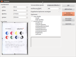

Software
Zum Verständnis dieses Artikels sind folgende Seiten hilfreich:
 Unter Ubuntu können eine Vielzahl von grafischen Scanprogrammen verwendet werden. Hier eine Übersicht über die gebräuchlichsten Programme. Dabei ist der Funktionsumfang recht unterschiedlich. XSane liefert die umfangreichsten Möglichkeiten inklusive Farbmanagmenteinstellungen und Texterkennung. Andere Programme wie JFotokopie und Simple Scan sind eher auf einfache Bedienbarkeit ausgelegt.
Unter Ubuntu können eine Vielzahl von grafischen Scanprogrammen verwendet werden. Hier eine Übersicht über die gebräuchlichsten Programme. Dabei ist der Funktionsumfang recht unterschiedlich. XSane liefert die umfangreichsten Möglichkeiten inklusive Farbmanagmenteinstellungen und Texterkennung. Andere Programme wie JFotokopie und Simple Scan sind eher auf einfache Bedienbarkeit ausgelegt.
Leider sind etliche Scanner unter Ubuntu nicht verwendbar. Das SANE-Projekt führt eine Liste  mit dem Unterstützungsstatus des jeweiligen Scanners. Als Alternative bietet sich ggf. an, über eine Virtuelle Maschine die bei vielen Scannern mitgelieferte Windows-/Mac-Scansoftware zu verwenden. USB-Scanner lassen sich beispielsweise über VirtualBox betreiben.
mit dem Unterstützungsstatus des jeweiligen Scanners. Als Alternative bietet sich ggf. an, über eine Virtuelle Maschine die bei vielen Scannern mitgelieferte Windows-/Mac-Scansoftware zu verwenden. USB-Scanner lassen sich beispielsweise über VirtualBox betreiben.
Programme zur Weiterverarbeitung (Nachbearbeitung der Scans, Texterkennung) sind im Artikel Texterkennung aufgeführt.
Programme¶
Simple Scan¶
Simple Scan ersetzt ab Ubuntu 10.04 XSane als Standard-Scanprogramm. Ebenso wie XSane und viele andere Scanprogramme ist es ein Frontend für SANE. Im Vordergrund steht eine möglichst einfache Bedienung. Daher fehlt manches wie beispielsweise ausgefeilte Scanneroptionen, eine Vorschau etc.
XSane¶
XSane ist ein Scanprogramm mit einer GTK+ Oberfläche. Es bietet sich also an, XSane unter GNOME oder Xfce zu nutzen. XSane bietet umfangreiche Vorschaufunktionen, alle Scanprogramm-typischen Einstellungen wie Auflösung, Anzahl der Farben usw., ein Histogramm, Optionen zu Verbesserung des Scans und Drehen der Vorschau und des fertigen Scans.
GIMP¶
Im GIMP kann man über "Datei -> Erstellen -> XSANE..." direkt mit XSane in das Grafikprogramm scannen. Eine nützliche Funktion, wenn man die gelesenen Bilder gleich weiterbearbeiten will. Auch für GnomeScan ist eine Einbindung möglich.
Skanlite¶
Skanlite ist ein einfaches Scanprogramm für KDE und löst bei KDE 4 die ehemalige Anwendung Kooka ab. Es ist dafür gedacht, Bilder zu scannen und danach abzuspeichern. Es bietet Zugriff auf beinahe alle von SANE unterstützten Optionen für den jeweiligen Scanner.
Kipiplugins¶
In den Kipiplugins (ab 0.80) ist mit "Bilder einlesen" ein einfaches Scanprogramm für KDE enthalten. Alle Programme (z.B. digiKam), welche die kipiplugins benutzen, können somit Bilder einlesen. Mit "Bilder einlesen" funktioniert das Programm unter KDE auch als Einzelprogramm. Die Funktionalität entspricht Skanlite. Es ist daher nicht nötig, beide Programme zu installieren.
JFotokopie¶
JFotokopie ist ein einfach zu bedienendes Sane-Frontend, das die grundlegenden Funktionen eines Fotokopierers nachbildet. Es wurde von iskarion als Java-Programm entwickelt und setzt eine SANE-fähigen Scanner voraus.
gscan2pdf¶
gscan2pdf ist ein Programm, das die Erstellung von PDF- und DjVu-Dokumenten aus gescannten Dokumenten erleichtern will. Ähnlich wie bei einem Kopierer kann man Seite für Seite einscannen und dann als PDF- oder TIFF-Datei abspeichern.
SwingSane¶
SwingSane ist eine Java-Programm, mit dem unter Linux, Windows oder OS2 auf SANE-Netzwerkscanner zugegriffen werden kann. Schwerpunkt lag bei der Entwicklung auf der Möglichkeit, möglichst alle Optionen der SANE-Backends direkt verwenden zu können.

OpenOffice/LibreOffice¶
Auch aus OpenOffice.org/LibreOffice heraus kann gescannt werden. Man erreicht das Menü über "Einfügen -> Medien -> Scannen..." Zunächst wird eine Quelle ausgewählt, d.h. Auflösung, Bildausschnitt, Scanner (falls mehrere vorhanden sind), Farbtiefe etc. angegeben. Im zweiten Schritt wird mit "Anfordern" der Scanvorgang gestartet. Das Textverarbeitungsprogramm bietet (auf etwas unkomfortablem Weg) genau wie XSane oder Skanlite Zugriff auf alle von SANE unterstützen Optionen für den Scanner.
iScan¶
iScan wird zusammen mit den proprietären Scannertreibern von Epson installiert und besitzt ein Gimp-Plugin. Es ist ein sehr einfaches Scannerfrontend mit wenigen Optionen und funktioniert ausschließlich mit den von Epsonkowa unterstützten Epson Scannern.
Hinweis!
Fremdsoftware kann das System gefährden.
Paperwork¶
Paperwork ist ein Programm zur Digitalisierung, Indexierung und Archivierung von Dokumenten aller Art. Die Vorlagen werden eingescannt oder vorhandene Bilddateien importiert. Mittels tesseract-ocr oder Cuneiform-Linux werden sie mit einer durchsuchbaren Textebene versehen, die Seitenausrichtung wird dabei automatisch erkannt und die Seite ggf. aufrecht gedreht. Das Programm bietet ein automatisches Indexierungs- und Suchsystem, das alle erkannten Wörter beinhaltet.
pct-scanner-scripts¶
pct-scanner-script ist ein reines Kommandozeilen-Werkzeug, um zu Archivierungszwecken PDF oder DjVu-Dateien zu erstellen. Das Programm ist recht vielseitig konfigurierbar, ebenso ist eine Erstellung einer Textebene für DjVu-Dokumente möglich. Es verwendet scanadf aus dem sane-Paket sowie einige PDF- und DjVu-Werkzeuge.
ScanGear¶
ScanGear wird zusammen mit den proprietären Scannertreibern von Canon installiert und funktioniert ausschließlich mit diesen.
Hinweis!
Fremdsoftware kann das System gefährden.

Tamanoir¶
Tamanoir ist ein Spezialprogramm, das sich ausschließlich dem Problem widmet, Staub- und Kratzerartefakte aus bereits eingescannten Bilddateien zu entfernen – also eine Art digitaler Staubsauger.
Vuescan¶
Für den Fall, dass ein Scanner absolut nicht mit SANE zusammenarbeiten will, kann ein Seitenblick auf Vuescan lohnenswert sein. Vuescan ist eine kommerzielle Software, die viele Scanner unterstützt, vor allem Filmscanner. Die Software läuft unter Linux, Windows und Mac. Sie unterstützt auch die Staub- und Kratzererkennung per Infrarot-Kanal.
Hinweis!
Fremdsoftware kann das System gefährden.
SANE GUI¶
 Eine grafische Oberfläche für den HP Scanjet 2300C und andere SANE-kompatible Scanner bietet SANE GUI
Eine grafische Oberfläche für den HP Scanjet 2300C und andere SANE-kompatible Scanner bietet SANE GUI  . Das Programm kann für 32-bit-Systeme als Archivdatei ScanJetLinux.zip heruntergeladen werden. Diese Datei muss anschließend noch entpackt werden.
. Das Programm kann für 32-bit-Systeme als Archivdatei ScanJetLinux.zip heruntergeladen werden. Diese Datei muss anschließend noch entpackt werden.
Unter Github Sane-GUI-Linux gibt es Versionen für 32/64 bit und den Quellcode.
Hinweis!
Fremdsoftware kann das System gefährden.
 Übersichtsartikel
Übersichtsartikel- Erstellt mit Inyoka
-
 2004 – 2017 ubuntuusers.de • Einige Rechte vorbehalten
2004 – 2017 ubuntuusers.de • Einige Rechte vorbehalten
Lizenz • Kontakt • Datenschutz • Impressum • Serverstatus -
Serverhousing gespendet von